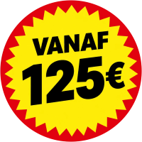

Pechbijstand
Ben je onderweg en laat je auto het afweten? Dan kan de oorzaak verschillend zijn. Wij analyseren je situatie, bekijken de mogelijkheden en bieden de meest efficiënte oplossing aan.
Een depannagedienst nodig in Hasselt?
Dan is Faster jouw partner! Sta je in panne onderweg naar een middag winkelen in Hasselt? Of start je auto niet in de parkeergarage na een dagje Modemuseum of stadsmuseum? Wij komen je helpen!
“Zeer tevreden, binnen de 15 minuten waren ze al aanwezig en qua prijs is dit gewoon de max!!! Zeker een aanrader!!!”
Alattim Tokmak · Google review
“Perfecte service. Staat zelf klaar om 1u 's nachts. Was binnen de 20 min aanwezig. En nog voor een goede prijs.”
nabil Choukair · Google review
“Iemand die zijn job goed kent, zeer vriendelijke chauffeur, professioneel geholpen, bedankt om snel te zijn 👍”
Karen Vardanyan · Google review
“Very professional. I will always recommend.”
ibrahim lucky · Google review
“Ik stond stil op de snelweg, het was zeer gevaarlijk met mijn vrouw en kinderen. Was heel snel ter plaatse en de goedkoopste die er was op dat moment.”
Marko Gheis · Google review
“Super snel opkomen dagen en de prijs was zoals afgesproken, geen gefoefel.”
TheRealM · Google review
“Op zondag pech gehad in Breda en meteen geholpen. Snelle, professionele en vriendelijke takeldienst. Bedankt!!”
Portsurmer · Google review
“Zeer tevreden, zeer goede service.”
Chayden Van Harneveldt · Google review
Ongeveer 20 minuten ter plaatse in Hasselt, vanaf €125.

“Hulp nodig in Hasselt? In het drukke centrum? Dat is voor ons geen probleem. Wij komen je depanneren!”Zaakvoerder Faster
Centrum Hasselt kan druk zijn en stilvallen op een drukke verkeersader staat op niemands wensenlijst. Maar geen zorgen: als je ons opbelt, komen we er zo snel mogelijk aan om je te helpen.
Niet alleen in het centrum snellen we je te hulp, ook in de deelgemeenten kunnen we je redder in nood zijn. Rijd je lek op de landelijke wegen in Kermt, Spalbeek, Stevoort of Sint-Lambrechts-Herk? Heb je panne met je wagen langs het Albertkanaal in Stokrooie, aan het kasteel van Wimmertingen of aan de abdijsite van Herkenrode in Kuringen? Of heb je pechbijstand nodig in de fruitstreek van Kortessem? Ook de deelgemeenten van Hasselt liggen binnen ons werkgebied.
Wist je dat ons werkgebied nog verder reikt? Ook in Zonhoven, Diepenbeek, Genk en Lummen zijn we actief. Meer informatie over ons werkgebied in Limburg vind je hier.
Zaakvoerder Faster
Wij werken met een vooraf afgesproken prijs, zodat je weet waaraan je begint. Een takeldienst van Faster komt in Hasselt al ter plaatse vanaf 125 euro.
We zetten in op betrouwbaarheid en persoonlijk contact. Daarom vinden we het belangrijk om onze klanten goede en volledige informatie te geven. Als je ons contacteert om op interventie te komen, bespreken we een vooraf vastgestelde prijs.
Voor auto's en bestelwagens tot 3,5 ton.
Ben je onderweg en laat je auto het afweten? Dan kan de oorzaak verschillend zijn. Wij analyseren je situatie, bekijken de mogelijkheden en bieden de meest efficiënte oplossing aan.
Soms is de schade na een ongeval of de oorzaak van je pech groter dan verwacht en is takelen noodzakelijk. Wij zorgen ervoor dat je voertuig met zorg wordt weggevoerd.
Heb je graag dat je wagen naar een plaats of garage van jouw keuze wordt gebracht? Dat kan!
Verschillende voertuigen, verschillende noden, verschillende oplossingen. Wij kunnen oplossingen bieden voor voertuigen tot 3,5 ton.
Stilgevallen in het midden van de weg? Of sta je op een druk verkeerspunt waar je geen kant meer uit kan met je defect voertuig? Bel Faster onmiddellijk of WhatsApp ons! Wij zijn 24/7 te bereiken om je zo snel mogelijk te helpen.
Heb je een vraag die je graag eerst op voorhand bespreekt, of een transport in de toekomst dat je wil regelen? Stuur een bericht via het formulier. Wij antwoorden zo snel mogelijk.
Problemen aan voertuigen komen voor in alle vormen. Wij proberen een gepaste oplossing te zoeken voor elke situatie. Sommige problemen komen vaker voor dan andere.
Een dagje Hasselt en je auto wil niet meer starten? Geparkeerd in een ondergrondse parking en je krijgt je auto niet gestart? Een lege batterij kan hiervan de oorzaak zijn. Wij proberen, als de veiligheid en techniciteit het toelaten, een interventie met een booster ter plaatse.
Het kan altijd en overal voorvallen: een lekke band. Vaak is de meest efficiënte en goedkope oplossing je voertuig laten wegbrengen naar een bandencentrale. Ook hiervoor kan je op ons rekenen.
Een depannage of takeldienst nodig op de prachtige Groene Boulevard van Hasselt? Op Faster kan je rekenen.
Zaakvoerder Faster
Veiligheid voor alles! Pech met je voertuig is balen, maar denk eerst aan je veiligheid, dan aan de rest.
Zaakvoerder Faster
Er lopen verschillende drukke wegen in en rond Hasselt, zoals de E313/N2 richting Lummen en de E314. Maar ook op de Groene Boulevard (R70) rond Hasselt, op de N74 richting Zonhoven of op de N80 richting Sint-Truiden passeren dagelijks heel wat voertuigen. Laat je niet afschrikken door het drukke verkeer. Wij zijn het gewoon om daartussen te navigeren en komen je helpen!
Praktische antwoorden voor wanneer je pech hebt in en rond Hasselt.
Vanuit Zonhoven ongeveer 20 minuten ter plaatse, met een vooraf afgesproken prijs.
